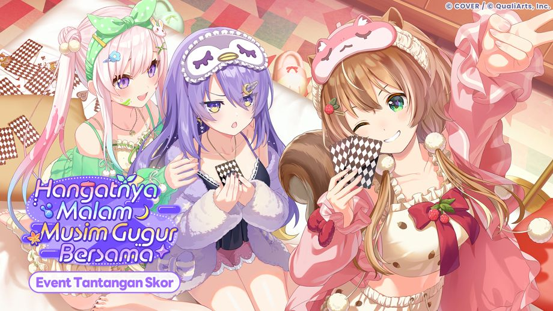
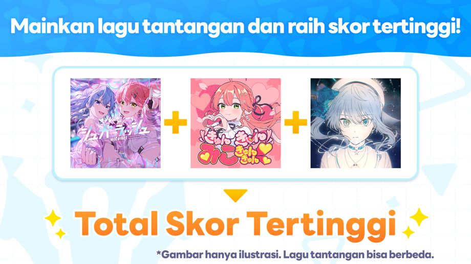
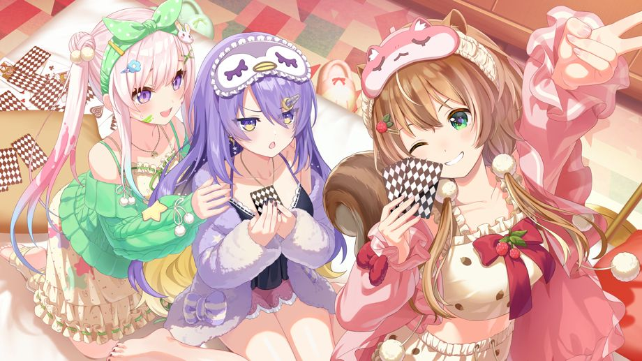
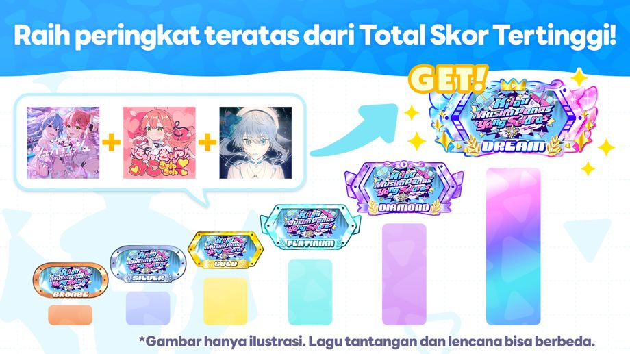
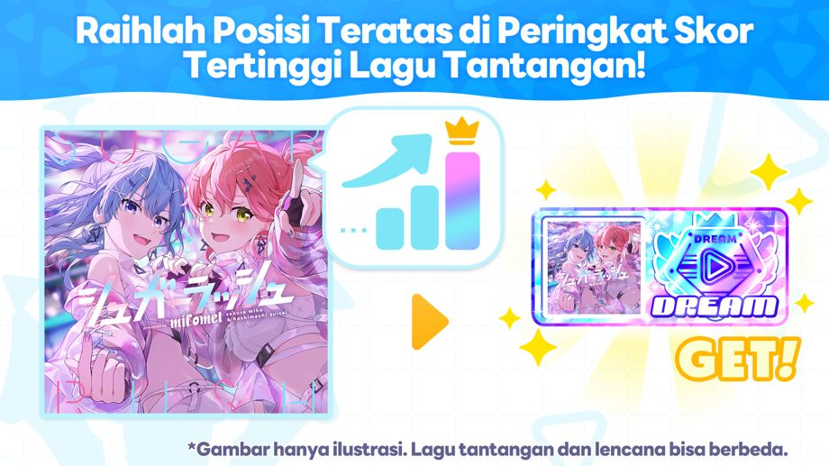
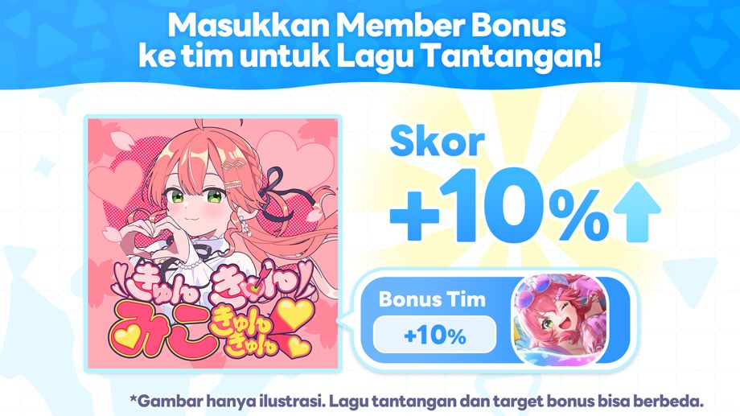
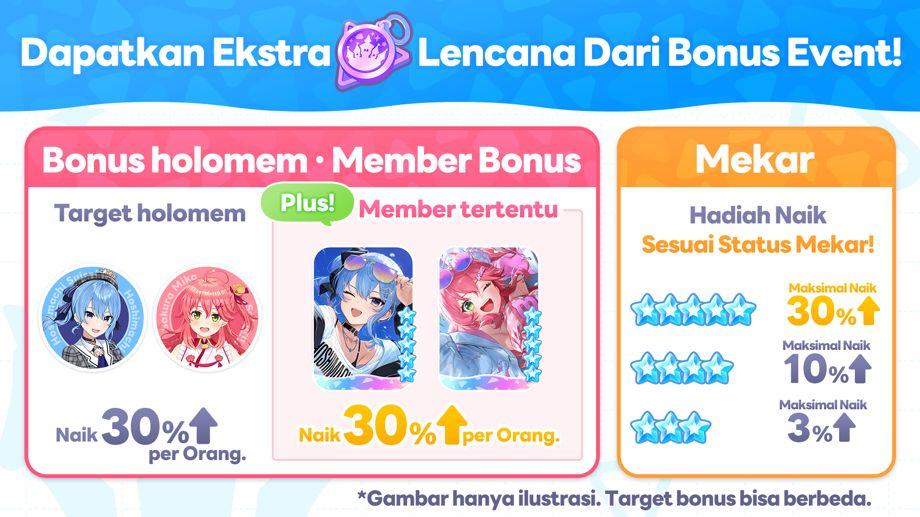

Event Tantangan Skor "Hangatnya Malam Musim Gugur Bersama" telah dimulai!
◆Persyaratan Partisipasi
Menyelesaikan Cerita Utama Chapter 1 Episode 4 "Legenda Yang Terhubung".
◆Periode Event
2026-11-06 12:00:00,2026-11-12 19:59:59
◆Periode Pengumuman Hasil
2026-11-13 12:00:00,2026-11-18 19:59:59
◆Batas Penukaran Lencana Event
2026-11-18 19:59:59
Ringkasan Event

Event tantangan skor adalah event di mana pemain menantang dirinya sendiri untuk mendapatkan skor yang tinggi pada lagu yang telah ditentukan.
Pemain dapat mendapatkan Lencana Event dengan mendapatkan ranking yang tinggi pada papan skor dan dengan memainkan Live dan Minigame selama periode event.
Dengan mengumpulkan Lencana Event, pemain bisa menukarkan Lencana dengan item seperti Event Memory di Toko Penukaran.
◆Memori Event

Total Peringkat Skor Tertinggi

Total peringkat skor tertinggi akan diperoleh berdasarkan jumlah skor yang didapatkan dari lagu-lagu yang terbatas selama event berlangsung.
Dengan berada di dalam peringkat, pemain akan mendapatkan hadiah seperti Lencana eksklusif dari event.
*Untuk informasi lebih lanjut, silakan periksa [Event]→[Peringkat]→[Total Skor Tertinggi]
Peringkat Skor Tertinggi

Peringkat Skor Tertinggi adalah event di mana pemain saling berkompetisi untuk mendapatkan skor tertinggi untuk tiap lagu event dalam waktu yang terbatas.
Dengan berada di dalam peringkat, pemain bisa mendapatkan Lencana eksklusif dari event.
*Pada Lagu Tantangan Event, skor periode terbatas event dan skor biasa keduanya akan tersimpan.
*Untuk informasi lebih lanjut, silakan periksa [Event]→[Peringkat]→[Skor Terbaik]
Bonus Skor Event

Bonus Event meliputi bonus skor yang akan menambah skor pemain selama periode tertentu ketika pemain memakai tim dengan member yang bisa mendapatkan bonus dan memainkan lagu yang ada pada event tersebut.
Member yang bisa mendapatkan bonus skor bervariasi tergantung lagu event.
Lagu Tantangan Event
・Dramatic XViltration
・Metropolis
・Multiverse
・Lucu Juga
*Untuk informasi lebih lanjut, silakan periksa [Event]→[Bonus Event].
Bonus yang Diperoleh dari Event

Bonus Event mencakup bonus yang meningkatkan jumlah Event Badge yang diperoleh dari Live.
Ada tiga jenis bonus yang bisa diperoleh ketika memainkan Live yaitu "Bonus Member", "Bonus Holomem", dan "Bonus Mekar".
・Bonus Member: Memainkan Live dengan member yang diminta di dalam tim akan memberikan bonus tambahan.
・Bonus holomem: Memainkan Live dengan holomem yang diminta di dalam tim akan memberikan bonus tambahan.
・Bonus Mekar: Jumlah hadiah yang diperoleh dari Live akan meningkat sesuai dengan status Mekar yang ada di dalam tim.
Bonus Event juga mencakup bonus yang meningkatkan jumlah Event Badge yang diperoleh dari Mini-game.
Ada dua jenis bonus yang bisa diperoleh dari Minigame, yaitu "Bonus Minigame" dan "Bonus Member".
・Bonus Minigame: Bonus tambahan bisa diperoleh dengan memainkan Minigame yang ditentukan.
・Bonus Member: Hanya dengan memiliki Member yang ditentukan, bonus tambahan akan diperoleh.
◆holomem yang Memperoleh Bonus
・Ayunda Risu
・Moona Hoshinova
・Airani Iofifteen
◆Member yang Memperoleh Bonus
・★5 Rutinitas Pagi Santai Ayunda Risu
・★5 Rendaman Lautan Bintang Moona Hoshinova
・★5 Senyuman Sehangat Mentari Airani Iofifteen
◆Mini Game yang Memperoleh Bonus
・Shadowbound Chase
*Untuk informasi lebih lanjut, silakan periksa [Event]→[Bonus Event].
Catatan Penting
・Lencana Event yang diterima di event ini tidak akan dilanjutkan ke event berikutnya.
・Mohon diperhatikan juga bahwa Lencana Event yang sudah kadaluwarsa tidak bisa digunakan.
・Hadiah Peringkat bisa diterima setelah hasil Peringkat diumumkan dan bisa diperiksa di [Dream Park]→[Menu Ikon]→[Hadiah]
・Walaupun pemain tidak Log In sama sekali selama Periode Pengumuman Hasil ranking, pemain tetap mendapatkan hadiahnya setelah periode event selesai.
・Hadiah penyelesaian Misi yang belum diklaim setelah Periode Pengumuman Hasil selesai bisa diklaim di [Dream Park]→[Menu Ikon]→[Hadiah]
・Memori Event yang bisa ditukar di Toko Penukaran pada event ini bisa muncul di event mendatang.
・Akibat pengaruh kondisi jaringan atau faktor lainnya, dapat terjadi selisih waktu sekitar 1 detik pada waktu mulai dan selesai.
・Konten dan periode event bisa bisa berubah sewaktu-waktu tanpa pemberitahuan terlebih dahulu.
・Untuk informasi lebih lanjut, silakan periksa [Dream Park]→[Event]